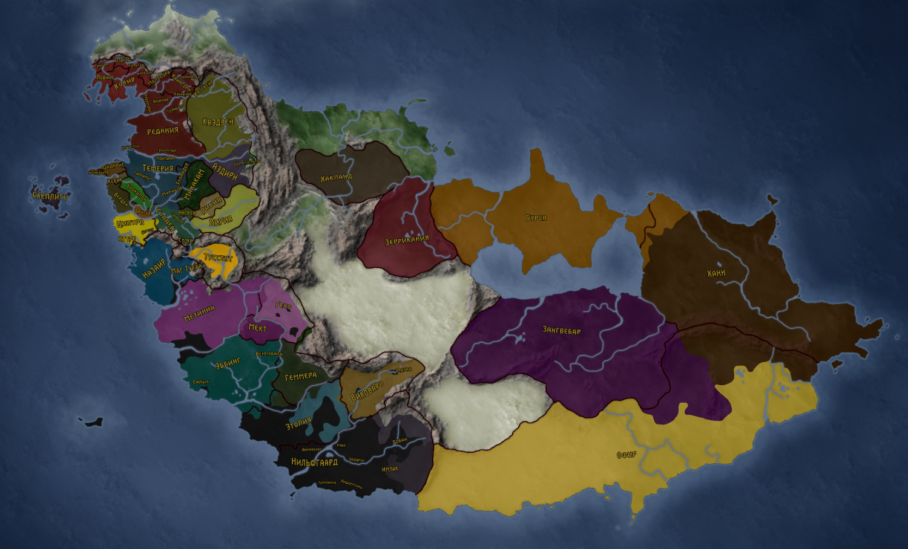

1. Карта Неверленда
Весь Неверленд (Ведьмачья версия), разделенный на государства
2. Основные персонажи
Главными персонажи (в разных медиа-материалах) являются всемирно извесный (благодаря игре 2015 года) Геральт из Ривии, его приемная дочь Цирилла (для своих: Цири) и колдунья Йеннифер из Венгеберга (и верная лошадь по кличке Плотва).
Также среди часто присутсвующих входят бард Лютик, колдунья Трисс Меригольд из Марибора, ведьмаки Ламберт и Эскель, гном Золтан Хивай и высший вампир Эмиэль Регис.
Больше информации о них и о других персонажах находится здесь
6. Медиа-материалы
6.1. Литература
Впервые история о ведьмаке Геральте была опубликована в декабрьском номере 1986 года ежемесячного журнала "Fantastyka" для конкурса (заработав третье место). В 1993 выходит первый сборник рассказов под названием "Последнее желание". В нынешнее время, "Сага о Ведьмаке" (так называется серия) имеет два сборника рассказов и шесть написанных романов (в 2018 году пан Сапковский объявил, что работает над новой книгой серии).
6.2. Графические адаптации
Первая адаптация была создана Мацеем Паровским в соавторстве с паном Сапковским и проил